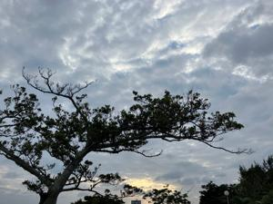
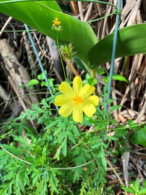
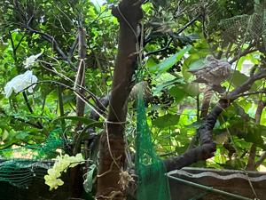

うるがいの話 ある日
最新: 令和５年梅雨入り【うるがいの話 ある日】とは 一日だけのプログです
『うるがいの話』の最新一日だけのプログで、通信料が少なく経済的だ。カニの画像をクリックすると全ての日付が載る『うるがいの話』サイトを表示します
|
|
【うるがいの話】 うるがい(ｳﾙｶﾞｲ urugai)とは、『もずくがに』の名前でとても大きくなります。 |
|---|---|
|
|
【カミマヤーの話】 猫のことを方言でマヤーといいます。カミマヤー（kamimayaa）とは、神の猫のことです。 |
|
【たながぁの音楽】 たながぁ（ﾀﾅｶﾞｰ tanagaa）とは手長えびのことで、何種類かあり大きいのは車 エビぐらいになります。 |

|
【ぶながぁの話】 ぶながぁ(ﾌﾞﾅｶﾞｰ bunagaa)とは、赤い髪の毛、赤い身体、そして身長は１ｍ２０ｃｍ ぐらい、川の蟹を食べているの目撃された。場所は沖縄県国頭郡大宜味村のと ある村僕の隣近所に住んでいる爺さんから、聞いた話です。 |
|
|
【ギーマの話】 ギーマ(giima)とは、山原の里山に咲くスズランに似た、 花を付けます。実は食べられます、 気が付くと口の周りが紫になっています。 |
2023年05月18日 (木）令和５年梅雨入り
15:58
 
お昼の雷は、ビックリポン。ヨメが悲鳴を上げるくらい、大きな音で落ちる。
１３時頃、『当地域、大雨洪水警報が発令されました』とスピーカーからアナ
ウンスが、だけど雨のピークは既に去り、ネットでみてもこの後雨は降りそう
にもない。

先週の火曜日から腰の痛みで、ギターを弾くのを辞めていた。腰が快復したの
で１０日ふりに弾く（上手になるためクラッシクの曲を弾く）。そして新しく
ゲットした動画の『氷雨 日野美』をコード弾きで演奏する。オヤジだ。きの
う２００８年公開の『結婚しようよ』を、録画でみる。主人公が、クライマッ
クス（娘の結婚式）で、ギターを辞めて既に２０年は過ぎたであろうが、唐突
に吉田拓郎の『けっこんしようよ』をギターで演奏するシーンがあった。還暦
を過ぎてギターに久々に触れた私の場合は、Ａｍコードさえ抑えることが出来
なかった。雨と言えば中学生の頃、ヒットした『雨にぬれながら たたずむ人
がいる傘の花が咲く・・・』三善英史の「雨」が、頭の中で流れる。ユーチュ
ーブ動画の【カラオケ】雨／三善英史と、ネットでそれのギターコードを拾っ
てコード弾きで演奏を楽しむこととする。
１５時５２分 ビットコインの総資産 ￥１０、８４８（↑２４０）